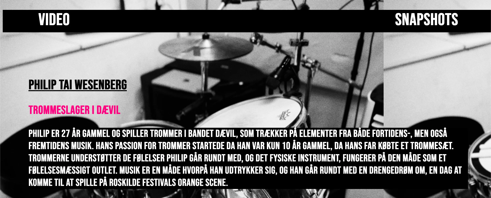

Video /SITE
Produktion af video
Formålet med videosite opgaven var at vi skulle lave en kort video om en person med en passion, og lave et dertilhørende website. Videoen skulle vare ét minut, og jeg valgte at den skulle omhandle min ven Philip Tai Wesenberg, som er trommeslager i bandet Dævil. Jeg har klippet videoen i Adobe Premiere Pro.
Videoen består af et videointerview med Philip, som beretter om sin passion for trommer, ud fra mine interview spørgsmål. Udover det består videoen af en række B-Rolls, hvor Philip bl.a. spiller trommer fra forskellige vinkler, som er klippet ind forskellige steder i interviewet. Mine B-Rolls er med til at visualisere videoens emne, og er med til at gøre videoen mere dynamisk. I videoen er der benyttet wideshots og close up shots.
Jeg har lagt videoen op med "video tagget" i min HTML kode, og den er også lagt op med Youtubes embed-metode.
Billeder
Foruden videoen, skulle vi også tage en række billeder til vores website. Mit website består af et baggrundsbillede som gentager sig selv, for at give en lidt edgy vibe, samt 3 portrætter af Philip, to i bredformat og ét i højformat. Billederne er i sort/hvid, for at skabe en dramatik, og de giver et godt samspil til den pink farve som kommer fra bandets logo, der fungerer som et "pop of color", jeg har brugt til mine underoverskrifter.